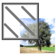
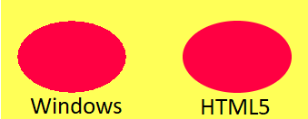

Surface for HTML5

Original Windows extension by Lukas Meller (Looki)


Surface for HTML5
Writed by Loïc OVIGNE - www.oviglo.frOriginal Windows extension by Lukas Meller (Looki)
About
Surface object is a powerfull extension for manipulate and display image data
Examples of use- Real-time in-game effects or graphics
- Drawing shapes with color, gradient or pattern
- Blit part of images
To use this HTML5 version, you need to install original Surface extension available in Fusion's Extension Manager
Differences with Windows version
This version use Js Canvas object, the rendering is executed by the browser instead of Windows library. There are many difference of rendering:Anti aliasing
The browser use automatically antialiasing to draw shapes, only simple rectange, line and ellipse with simple color are generate pixel by pixel to have no bluring edges
Save image to file
Javascript cannot save files in user computer, the "Save to file" action open a new tab in browser with imageTransparent color
In Fusion, transparent color and alpha channel are 2 differents things, in Html5 there are only alpha channel. The transparent color is simulate with 0 alpha value.Unimplemented features
Due to the difference between engines some features are not implemented in HTML5 export:Blit
- Blit from/onto Overlay
- Blit from/onto Image reference
- Blit from/onto Window handle
- Blit rotation quality
HWA
- Convert to bitmap
- Convert to HWA texture
- Convert to HWA target
Text
- Text clipping
- Word break
- Ellipsis
- Strike and underline
Other
- Lock/Unlock buffer
- Write bytes
- Add/Insert image reference
- All extension filter expressions
Know issues
- Blit effect with rotation: there are a small display bug
2020-05-19
- The lines are now drawn with rounded ends
- Crash when draw line with 1 pixel width
- Better performance on blitting with blend effects (OR, AND)
- Draw line with pattern crashed
- Minors fixes
Thanks
Thanks to Lukas Meller (Looki) for his autorisation to export his extension